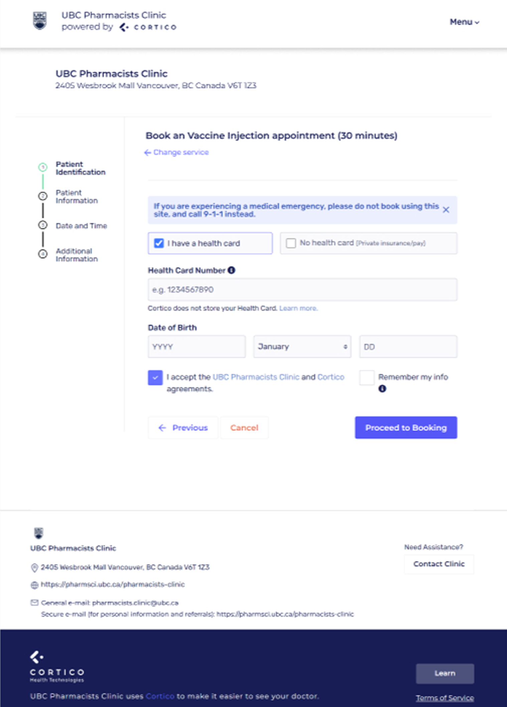
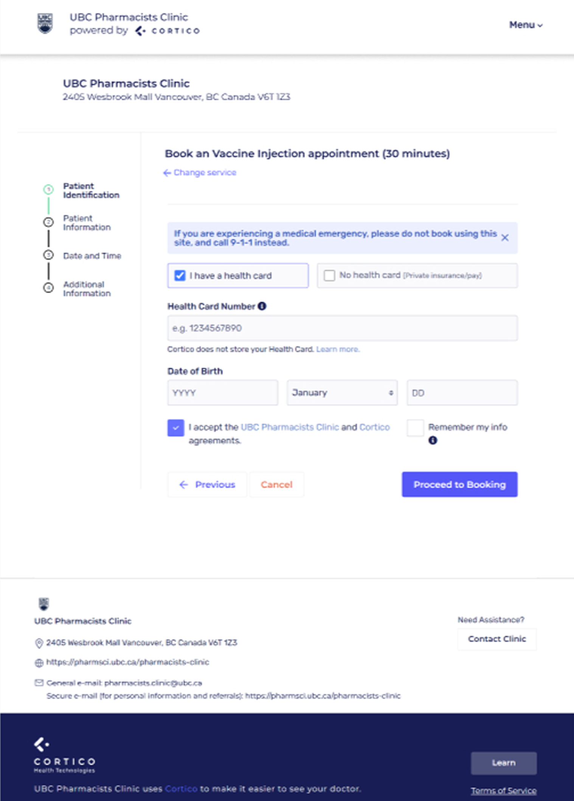

UBC Pharmacists Clinic Minor Ailments & Contraceptives (MAC) Service Design
Designing services and interfaces to support patient-centered care.
.svg)
Overview
CLIENT
OUTPUTS
Appointment Booking Process
Appointment Booking Portal
Billing Process
Website
ROLE
Service Designer and UX Lead
TIMEFRAME
1 month
Context
The UBC Pharmacists Clinic is a university-affiliated, pharmacist-led
patient care clinic. At the clinic, the clinicians use their specialized
knowledge in medication to support the care of medically complex
patients.
In 2023, a provincial initiative enabled pharmacists in British Columbia to prescribe
medications
for
21 minor
ailments and contraceptives (MAC). The clinic needed to adapt its appointment booking process to accommodate
these new services.
Approach
Working with the clinical leadership team, I determined which ailments required in-person vs virtual diagnosis. Then I worked with clinicians and administrative staff to define the required intake data for:
- patient charts (name, contact information, PHN, MAC type, etc.)
- government billing and reporting (MACs specific identification numbers)
Once this information was confirmed, I communicated upcoming changes to the developers to prepare them.

Using journey mapping and a service blueprint lens, I documented both frontstage patient interactions and backstage administrative and clinical processes. I mapped the clinic’s existing booking, intake, clinical, and billing workflows to understand how patients, administrative staff, and clinicians interacted across the service.
I then identified where the new MAC services:
- introduced friction with existing appointment types, intake forms, and billing processes.
- required changes around appointment routing, eligibility, and information handoff between systems.


Designed updated service logic to support MAC appointments, including:
- How patients identify their condition
- How appointment types are routed (virtual vs in-person)
- How intake data flows into clinical and billing systems
Defined what information needed to be collected:
- During intake
- At the point of care
- During billing
The updated MAC service was piloted by initially offering
appointments two days per week and supporting a subset of 10 out of the 21 eligible minor ailments. This
phased approach allowed the clinic to test new workflows and assess capacity
before expanding the service.
During this phase, I acted as the primary point of coordination between
clinicians, MOAs, and developers, advocating for clinical and patient needs in technical discussions
while also communicating system constraints and implementation considerations back to clinic staff. I
led decision-making around service updates and workflow changes, ensuring feedback from the clinic was
translated into actionable, human-centred improvements.
Final Design
 

Impact
Developed and implemented a new patient intake system that decreased
appointment booking time by 30% and minimized back-and-forth between
staff and patients.
Redesigned clinic website architecture and content flow, resulting in a 45% increase in user engagement and
improved accessibility for patients.